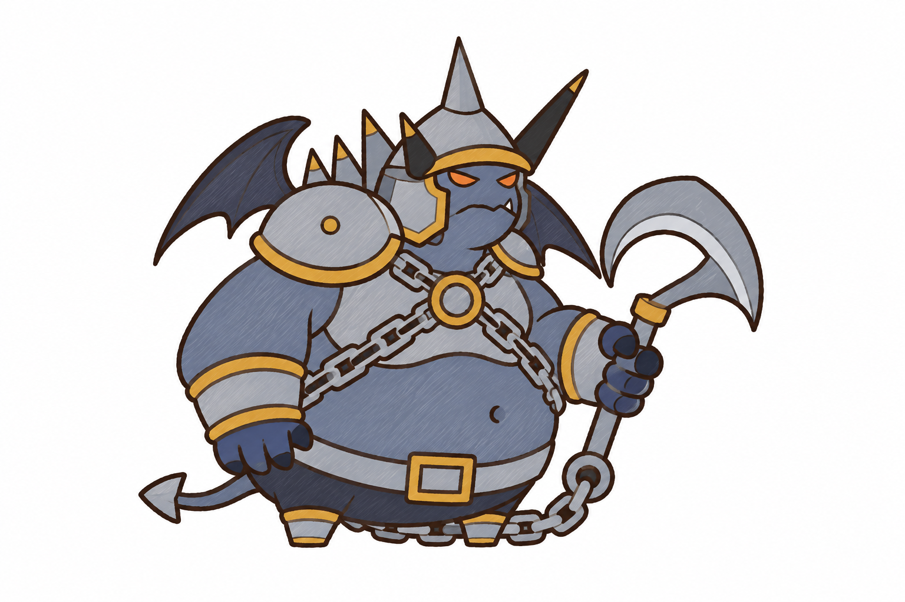
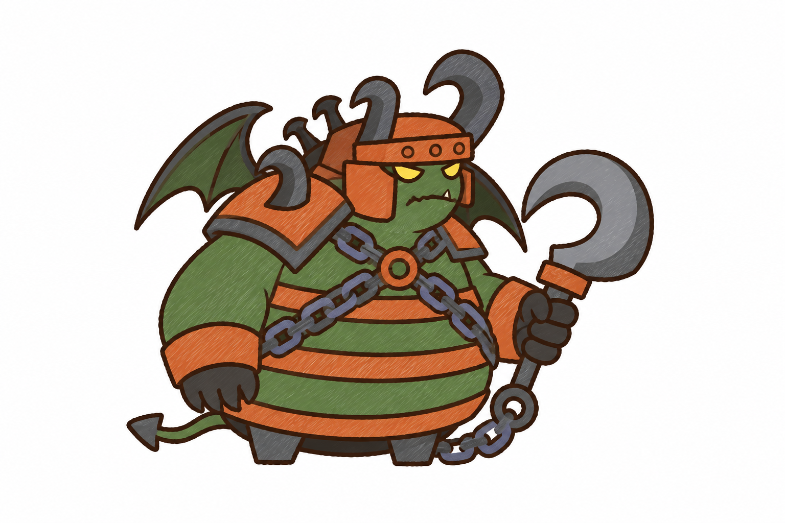
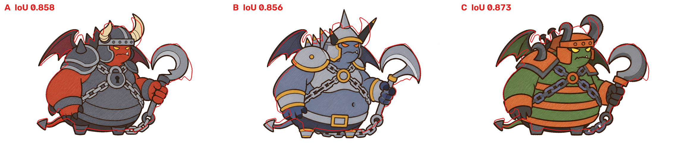

Con gốc monster_3408 (khung 0 idle): chỉ để so dáng, chỗ, cỡ từng mảnhA quỷ đỏ, giáp gang sẫm: mũ chảo tròn hàng đinh, sừng bò ngà, ba vây sắt sau lưng, giáp vai hai lớp + gai, giáp bụng tròn kín bụng, ổ khoá sắt, móc treo thịt, mắt vàng

B quỷ xanh than, giáp thép + đồng thau: mũ chóp nhọn, sừng đen thẳng bịt đồng, ba chóp thép, giáp vai vòm không gai, giáp ngực + đai bụng khoá đồng (bụng lộ), vòng đồng, móc liềm, mắt cam

C quỷ xanh rêu, giáp đồng đỏ: mũ xô đỉnh bằng, sừng cong ngược như móc, ba móc sắt sau lưng, giáp vai vuông + gai móc, bụng quấn đai đồng (GPT vẽ ~5 đai thay vì 3), vòng đồng, móc cẩu, mắt vàng chanh

Viền đỏ = hình bóng con gốc chồng lên A, B, C (độ khớp 0,86 / 0,86 / 0,87). Lệch chủ yếu ở mũ, sừng, gai (đã cố ý đổi dáng) và lưỡi móc (cả ba vẽ nhỏ hơn lưỡi liềm gốc; móc là mảnh cứng một xương nên không ảnh hưởng rig)